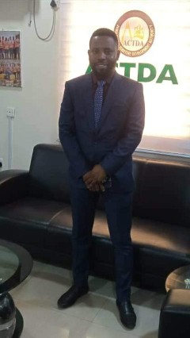

Emmanuel Edozie Atuanya is the Founder and Chief Executive Officer of Climaxt Technologies, a technology-driven organization dedicated to delivering innovative digital solutions that empower individuals, businesses, institutions, and communities. He is a Data Analyst, Public Health Professional, Educator, ICT Administrator, aspiring Full-Stack Web Developer, and lifelong learner with a passion for leveraging technology and data-driven solutions to solve real-world problems.
Emmanuel began his educational journey at Hope Primary School, Mafoluku, Oshodi, Lagos State, before continuing at Central School, Isuaniocha, Anambra State, where he completed his First School Leaving Certificate with Distinction.
He proceeded to Igwebuike Grammar School, Awka, Anambra State, for his secondary education, where he developed a strong academic foundation and passion for the sciences.
Driven by a commitment to academic excellence and professional growth, Emmanuel earned a Bachelor of Science (B.Sc.) degree in Applied Biochemistry from Nnamdi Azikiwe University, Awka, Anambra State.
He further obtained a Postgraduate Diploma in Education (PGDE) from the same institution and is a certified member of the Teachers Registration Council of Nigeria (TRCN), affirming his professional standing as an educator. He later earned a Master of Public Health (MPH) degree from Ahmadu Bello University, Zaria, Kaduna State.
In addition, he is a Certified Data Analyst with growing expertise in software development, data science, and modern web technologies.
With over a decade of professional experience in education, administration, information technology, and data analytics, Emmanuel has consistently demonstrated excellence in leadership and organizational development.
His professional career gained significant momentum at British Spring College, Awka, where he served from June 2016 to October 2022. During his time with the institution, he taught Biology and Chemistry and distinguished himself through exceptional dedication and performance
Recognizing his leadership abilities and commitment to excellence, he was appointed Head of the Science Department, where he successfully coordinated academic activities within the department and contributed to improved student performance. His outstanding service subsequently earned him promotion to the position of Junior School Academic Supervisor and later to Senior School Academic Supervisor, where he provided academic leadership, supervised instructional delivery, coordinated teachers, and contributed to the overall development of the institution.

In November 2022, Emmanuel joined the Awka Capital Territory Development Authority (ACTDA), where he currently serves as Executive Assistant to the Managing Director/Chief Executive Officer, Hon. Ossy Onuko, PhD. In this strategic role, he supports executive decision-making, policy implementation, project coordination, stakeholder engagement, and organizational administration.
In addition to his responsibilities as Executive Assistant, Emmanuel serves as the Head of the Department of Information and Communication Technology (ICT) at ACTDA. In this capacity, he oversees the Authority's digital initiatives, information systems, technology infrastructure, data management processes, and ICT-driven innovations aimed at enhancing service delivery and organizational efficiency.
Further demonstrating his versatility and commitment to educational advancement, Emmanuel also served as Educational Consultant and Superintendent at Diamond Special College, Owerri, Imo State, from July 2024 to December 2025. In this role, he provided strategic academic guidance, institutional supervision, administrative support, and quality assurance services that contributed to the growth and development of the institution.
Beyond his educational and administrative achievements, Emmanuel has developed extensive expertise in data analytics, business intelligence, information systems, and emerging technologies. He is proficient in Microsoft Excel, SQL, Power BI, Python, PostgreSQL, and various web development technologies. As an aspiring Full-Stack Web Developer, he continues to expand his technical capabilities in order to design and deploy innovative digital solutions that address real-world challenges.
.webp)
Through Climaxt Technologies, Emmanuel seeks to bridge the gap between technology and practical problem-solving by creating solutions that improve productivity, support evidence-based decision-making, enhance organizational performance, and contribute to sustainable development. His vision is to build a technology company recognized for innovation, excellence, integrity, and meaningful societal impact.

Beyond his professional accomplishments, Emmanuel is a devoted husband and father. He is happily married to Mrs. Eberechukwu Priscilia Atuanya, whose unwavering support and partnership continue to play a significant role in his personal and professional success. Together, they are blessed with a son, Munachimso, who serves as a constant source of joy, inspiration, and motivation.
Emmanuel's life and career are guided by the values of integrity, excellence, innovation, continuous learning, professionalism, and service to humanity. Through education, public health, technology, and leadership, he remains committed to making meaningful contributions to society while inspiring others to pursue excellence in their chosen endeavors.
"Technology is most valuable when it is used to solve problems, create opportunities, and improve lives."